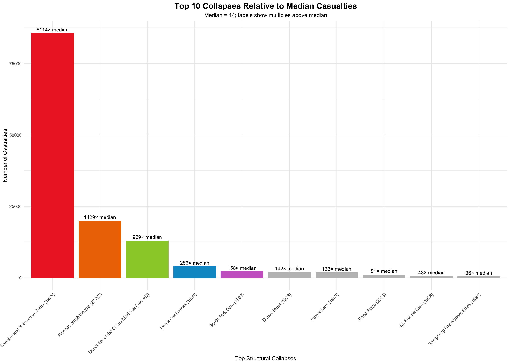
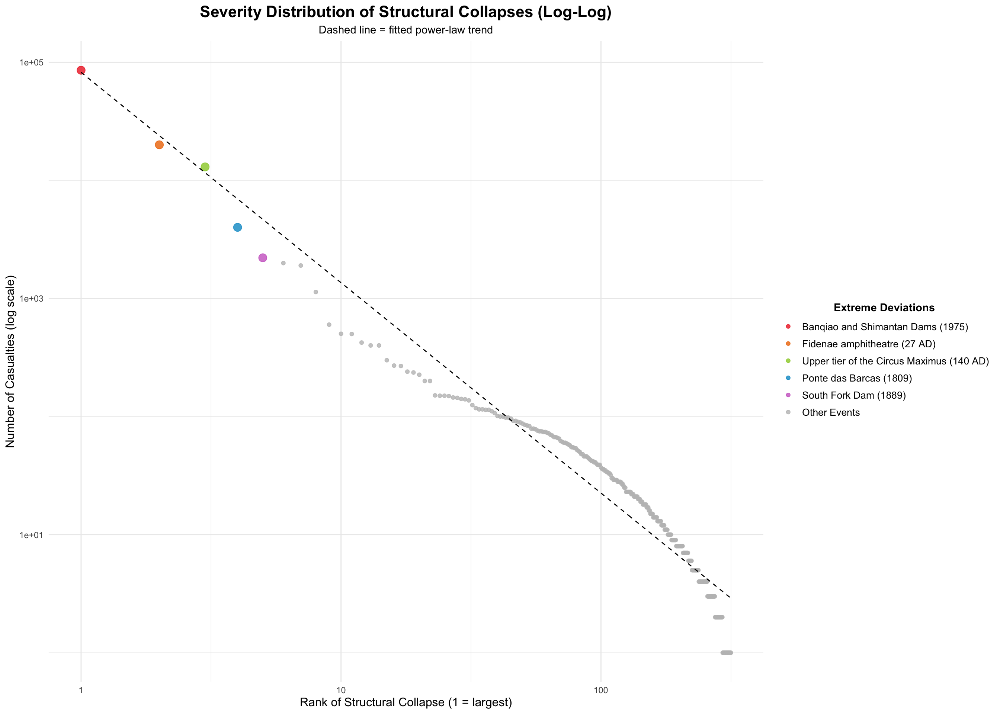
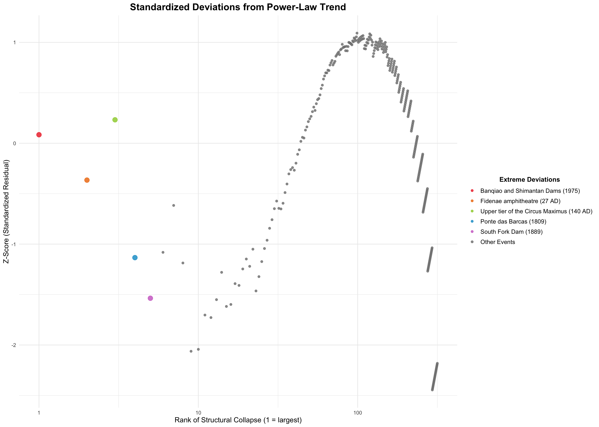

Modern societies depend on complex technological systems: industrial plants, transportation networks, large buildings, and nuclear infrastructure. Most of the time these systems function safely, and when failures occur they tend to be limited in scale. Machines break, accidents occur, and small structural failures happen without causing widespread catastrophe. However, history also records rare but devastating disasters: chemical plants releasing toxic gas, nuclear reactors suffering catastrophic meltdowns, or large buildings collapsing with massive loss of life. Events such as the Chernobyl disaster and the Rana Plaza collapse demonstrate how failures in complex systems can produce outcomes far beyond ordinary accidents.
In many natural and technological systems, the sizes of events follow what statisticians call a heavy-tailed distribution. In such distributions, small events are common while large events are rare but still possible. Earthquakes, financial losses, and infrastructure failures often exhibit this pattern. One common mathematical description of such behavior is the power-law distribution, in which the probability of an event decreases slowly as its size increases. This means that extremely large events, while rare, are more likely than they would be in a normal distribution. However, physicist Didier Sornette proposed that some extreme events may not simply be the largest outcomes of the same statistical process. Instead, they may arise from different underlying mechanisms, such as cascading failures, positive feedback loops, or systemic instability. These extraordinary events are known as dragon kings, a term intended to describe extreme outliers that dominate the rest of the distribution.
This project explores the largest structural collapses as dragon-king events. Using data on building and structure collapses compiled from Wikipedia, we analyze the distribution of collapse severity and identify the most catastrophic events as clear outliers from ordinary failures.
# Load all required packages quietly
suppressMessages({
library(tidyverse)
library(rvest)
library(httr)
library(stringr)
library(janitor)
library(ggplot2)
library(poweRlaw)
})The structural collapse data are contained on a single Wikipedia page, organized into multiple tables corresponding to different historical periods. To build a comprehensive dataset, we first download the page and extract all tables with the “wikitable” class. Each table is parsed into a structured dataframe, and column names are standardized before combining all tables into a master dataset. We then clean the data by splitting the location column into city and country, extracting numeric values from the casualties column, and handling inconsistent year formats, including approximate ranges and BCE dates. Text fields are cleaned of extra whitespace and other artifacts. The resulting dataset provides consistent, analysis-ready columns for year, structure name, city, country, type of structure, and number of casualties.
# ---- 1. Function to scrape tables ----
scrape_collapse_tables <- function(url) {
page <- tryCatch({
GET(url, user_agent("Mozilla/5.0")) %>% read_html()
}, error = function(e) return(NULL))
if (is.null(page)) return(NULL)
tables <- page %>% html_elements("table.wikitable")
if (length(tables) == 0) return(NULL)
# Scrape and combine tables
page_data <- map_df(seq_along(tables), function(i){
df <- tables[[i]] %>% html_table(fill = TRUE)
df <- df %>%
janitor::clean_names() %>%
mutate(across(everything(), as.character))
df
})
# Split location into city and country
page_data <- page_data %>%
mutate(location = str_squish(location)) %>%
separate(location, into = c("city", "country"), sep = ",\\s*", extra = "merge", fill = "right") %>%
mutate(
city = str_squish(city),
country = str_squish(country)
)
# Clean casualties column
page_data <- page_data %>%
mutate(
casualties = str_extract(casualties, "[0-9,]+"),
casualties = as.numeric(str_remove_all(casualties, ","))
)
# Standardize text fields
page_data <- page_data %>%
mutate(
structure = str_squish(structure),
city = str_squish(city),
country = str_squish(country),
type = str_squish(type)
)
# Keep only desired columns
page_data <- page_data %>%
select(year, structure, city, country, type, casualties)
return(page_data)
}
# ---- 2. Scrape the Wikipedia page ----
url <- "https://en.wikipedia.org/wiki/List_of_building_and_structure_collapses"
collapse_clean <- scrape_collapse_tables(url)
# Create dataset used for analysis and plotting
collapse_plot <- collapse_clean
# Preview results
glimpse(collapse_clean)## Rows: 436
## Columns: 6
## $ year <chr> "226 BCE", "27", "ca. 27–30", "140", "312", "558", "1091", …
## $ structure <chr> "Colossus of Rhodes collapse", "Fidenae amphitheatre collap…
## $ city <chr> "City of Rhodes", "Fidenae", "Jerusalem", "Rome", "Rome", "…
## $ country <chr> "Island of Rhodes", "Italia, Roman Empire", "Judea, Roman E…
## $ type <chr> "Statue", "Amphitheatre", "Tower", "Amphitheatre", "Bridge"…
## $ casualties <dbl> NA, 20000, 18, 13000, NA, NA, NA, 60, 400, NA, NA, NA, NA, …The dataset includes 314 structural collapse events. Most events are small, with a median of 14 casualties, but a few extreme events dominate the distribution. For instance, the Banqiao and Shimantan Dams in 1975 caused 85,600 casualties - over 6,100× the median. Other historically catastrophic events include the Fidenae amphitheatre collapse in 27 CE (20,000 casualties, 1,430× median), the upper tier collapse of the Circus Maximus in 140 CE (13,000 casualties, 930× median), the Ponte das Barcas in 1809 (4,000 casualties, 286× median), and the South Fork Dam in 1889 (2,209 casualties, 158× median).
# Basic summary statistics
summary_stats <- collapse_plot %>%
summarise(
total_events = n(),
max_casualties = max(casualties, na.rm = TRUE),
median_casualties = median(casualties, na.rm = TRUE),
mean_casualties = mean(casualties, na.rm = TRUE)
)
summary_stats## # A tibble: 1 × 4
## total_events max_casualties median_casualties mean_casualties
## <int> <dbl> <dbl> <dbl>
## 1 436 85600 14 439.# Top 10 events
top10 <- collapse_plot %>%
slice_max(casualties, n = 10) %>%
select(structure, city, country, casualties)
top10## # A tibble: 10 × 4
## structure city country casualties
## <chr> <chr> <chr> <dbl>
## 1 Banqiao and Shimantan Dams Zhumadian Henan,… 85600
## 2 Fidenae amphitheatre collapse Fidenae Italia… 20000
## 3 Upper tier collapse of the Circus Maximus Rome Italia… 13000
## 4 Ponte das Barcas Porto Portug… 4000
## 5 South Fork Dam Johnstown Pennsy… 2209
## 6 Dunes Hotel Las Vegas Nevada 1993
## 7 Vajont Dam Friuli-Venezia … Italy 1900
## 8 Rana Plaza collapse Savar Dhaka,… 1134
## 9 St. Francis Dam Santa Clarita Califo… 600
## 10 Sampoong Department Store collapse Seoul South … 502# Ratio of largest to median event
ratio <- collapse_plot %>%
summarise(
ratio = max(casualties) / median(casualties)
)
ratio## # A tibble: 1 × 1
## ratio
## <dbl>
## 1 NA# Identify top 10 collapses
top10 <- collapse_plot %>%
slice_max(casualties, n = 10) %>%
select(year, structure, city, country, casualties) # include year
# Prepare top 10 with year labels and ratio to median
top10_plot_data <- top10 %>%
mutate(
clean_name = str_remove_all(structure, regex("collapse", ignore_case = TRUE)),
clean_name = str_squish(clean_name),
# Add AD for years < 500
year_label = ifelse(as.numeric(year) < 500,
paste0(year, " AD"),
as.character(year)),
# Combine name + year for x-axis labels
label = paste0(clean_name, " (", year_label, ")"),
# Calculate ratio to median
ratio_to_median = round(casualties / summary_stats$median_casualties, 0)
) %>%
arrange(desc(ratio_to_median)) %>%
mutate(label = factor(label, levels = label)) # preserve order
# Manual color assignment
top_colors <- c("firebrick2", "darkorange2", "olivedrab3", "deepskyblue3", "orchid3",
"gray75", "gray75", "gray75", "gray75", "gray75")
names(top_colors) <- top10_plot_data$label
# Plot
ggplot(top10_plot_data, aes(x = label, y = casualties, fill = label)) +
geom_col() +
scale_fill_manual(values = top_colors) +
# Add ratio labels above bars
geom_text(aes(label = paste0(ratio_to_median, "× median")),
vjust = -0.5, size = 3.5) +
labs(
x = "Top Structural Collapses",
y = "Number of Casualties",
title = "Top 10 Collapses Relative to Median Casualties",
subtitle = "Median = 14; labels show multiples above median"
) +
theme_minimal() +
theme(
axis.text.x = element_text(angle = 45, hjust = 1),
plot.title = element_text(hjust = 0.5, face = "bold", size = 16),
plot.subtitle = element_text(hjust = 0.5),
legend.position = "none"
)
We fit a linear regression to the log10-transformed rank versus log10-transformed casualties, which approximates the power-law trend that governs heavy-tailed distributions. In this context, the slope of the line reflects how quickly the expected number of casualties decreases as we move down the ranking of events, while the intercept sets the baseline magnitude. By comparing the observed log-casualties of the top five collapses to the predicted values from this trend line, we can see which events are unusually large relative to what the power-law would suggest. This provides a quantitative basis for identifying extreme events that might warrant further investigation as potential dragon kings - events whose scale cannot be explained simply by the usual statistical pattern of structural collapses.
collapse_numeric <- collapse_plot %>%
filter(!is.na(casualties) & casualties > 0) %>%
arrange(desc(casualties)) %>%
mutate(
rank = row_number(),
log_rank = log10(rank),
log_casualties = log10(casualties)
)
# Fit linear model
pl_fit <- lm(log_casualties ~ log_rank, data = collapse_numeric)
# Extract slope and intercept
slope <- coef(pl_fit)[2]
intercept <- coef(pl_fit)[1]
# Predicted log-casualties for the top 5 events
top5_log_pred <- collapse_numeric %>%
slice(1:5) %>%
mutate(predicted_log = predict(pl_fit, .)) %>%
select(structure, rank, log_casualties, predicted_log)
slope; intercept; top5_log_pred## log_rank
## -1.78124## (Intercept)
## 4.914609## # A tibble: 5 × 4
## structure rank log_casualties predicted_log
## <chr> <int> <dbl> <dbl>
## 1 Banqiao and Shimantan Dams 1 4.93 4.91
## 2 Fidenae amphitheatre collapse 2 4.30 4.38
## 3 Upper tier collapse of the Circus Maximus 3 4.11 4.06
## 4 Ponte das Barcas 4 3.60 3.84
## 5 South Fork Dam 5 3.34 3.67The log–log rank–size plot transforms the wide range of casualties onto a logarithmic scale, revealing the heavy-tailed nature of structural collapses. A linear trend on the log–log axes approximates the power-law relationship between rank and casualties, with slope −1.76 and intercept 4.87 in the fitted model. Comparing the top events to the trend line, the Banqiao and Shimantan Dams (rank 1) sits slightly above the expected value (observed log₁₀ casualties 4.93 vs. predicted 4.87), while Fidenae (rank 2) is marginally below (observed 4.30 vs. predicted 4.33). The upper tier of Circus Maximus, Ponte das Barcas, and South Fork Dam similarly lie close to the predicted line. Although these events dominate the upper tail, their proximity to the trend line indicates that their extreme size is consistent with the heavy-tailed distribution, making them “upper-tail” events rather than statistical anomalies in this sense.
# ---- 1. Add predicted values for plotting ----
collapse_numeric <- collapse_numeric %>%
mutate(predicted_casualties = 10^(predict(pl_fit, .))) # convert back from log10
# ---- 2. Identify top 5 collapses ----
top_events <- collapse_plot %>%
slice_max(casualties, n = 5) %>%
mutate(
clean_name = str_remove_all(structure, regex("collapse", ignore_case = TRUE)),
clean_name = str_squish(clean_name),
legend_label = paste0(
clean_name,
" (",
ifelse(as.numeric(year) < 500,
paste0(year, " AD"),
year),
")"
)
)
# ---- 3. Merge top 5 info and create grouping variable ----
collapse_plot2 <- collapse_numeric %>%
left_join(
top_events %>% select(structure, legend_label),
by = "structure"
) %>%
mutate(
event_group = ifelse(is.na(legend_label), "Other Events", legend_label)
)
# ---- 4. Factor levels so "Other Events" appears last ----
legend_levels <- c(top_events$legend_label, "Other Events")
collapse_plot2$event_group <- factor(collapse_plot2$event_group, levels = legend_levels)
# ---- 5. Manual color assignment ----
extreme_colors <- c("firebrick2", "darkorange2", "olivedrab3", "deepskyblue3", "orchid3")
names(extreme_colors) <- top_events$legend_label
color_values <- c(extreme_colors, "Other Events" = "gray75")
size_values <- c(setNames(rep(3.5, 5), top_events$legend_label), "Other Events" = 1.5)
# ---- 6. Plot ----
ggplot(collapse_plot2, aes(rank, casualties)) +
# Points colored by event group
geom_point(aes(color = event_group, size = event_group), alpha = 0.8) +
# Add trend line from fitted log-log model
geom_line(aes(y = predicted_casualties), color = "black", linetype = "dashed") +
# Log scales
scale_x_log10() +
scale_y_log10() +
# Manual colors and sizes
scale_color_manual(values = color_values) +
scale_size_manual(values = size_values, guide = "none") +
# Labels
labs(
x = "Rank of Structural Collapse (1 = largest)",
y = "Number of Casualties (log scale)",
color = "Extreme Deviations",
title = "Severity Distribution of Structural Collapses (Log-Log)",
subtitle = "Dashed line = fitted power-law trend"
) +
# Theme
theme_minimal() +
theme(
plot.title = element_text(hjust = 0.5, face = "bold", size = 16),
plot.subtitle = element_text(hjust = 0.5),
axis.title = element_text(size = 12),
legend.position = "right",
legend.title = element_text(face = "bold", hjust = 0.5),
legend.text = element_text(size = 10)
)
The Z-score plot measures deviations from the fitted log–log trend, highlighting events whose casualties are unusually high or low relative to the expected trend given their rank. Surprisingly, the top 5 casualty events do not correspond to the highest Z-scores. Instead, the highest Z-scores (≈1.05 - 1.07) belong to modern building collapses such as the 2018 Magnitogorsk building collapse (39 casualties, rank 97) and the 2019 Sihanoukville collapse (28 casualties, rank 117). These events are outliers relative to their position in the rank-casualty trend, often occurring in the mid-to-lower tail of the distribution rather than the extreme upper tail. This illustrates a critical point: dragon kings are not purely defined by absolute casualties, but by underlying mechanisms that cause them to deviate disproportionately from the expected statistical pattern. The Z-score plot is thus useful for detecting relative anomalies and guiding further investigation, but it should be interpreted alongside context, historical factors, and systemic mechanisms, rather than as a strict ranking of the “largest” events.
# ---- 1. Prepare data ----
collapse_numeric <- collapse_plot %>%
filter(!is.na(casualties) & casualties > 0) %>%
arrange(desc(casualties)) %>%
mutate(rank = row_number(),
log_rank = log10(rank),
log_casualties = log10(casualties))
# ---- 2. Fit linear regression on log-log data ----
pl_fit <- lm(log_casualties ~ log_rank, data = collapse_numeric)
# ---- 3. Compute residuals and z-scores ----
collapse_numeric <- collapse_numeric %>%
mutate(
residual = log_casualties - predict(pl_fit, collapse_numeric),
z_score = residual / sd(residual)
)
# ---- 4. Merge top 5 casualties events for consistency ----
top_events <- collapse_plot %>%
slice_max(casualties, n = 5) %>%
mutate(
clean_name = str_remove_all(structure, regex("collapse", ignore_case = TRUE)),
clean_name = str_squish(clean_name),
legend_label = paste0(
clean_name,
" (",
ifelse(as.numeric(year) < 500, paste0(year, " AD"), year),
")"
)
)
collapse_numeric2 <- collapse_numeric %>%
left_join(
top_events %>% select(structure, legend_label),
by = "structure"
) %>%
mutate(
event_group = ifelse(is.na(legend_label), "Other Events", legend_label)
)
# ---- 5. Factor levels so "Other Events" is at bottom ----
legend_levels <- c(top_events$legend_label, "Other Events")
collapse_numeric2$event_group <- factor(collapse_numeric2$event_group, levels = legend_levels)
# ---- 6. Manual color assignment ----
extreme_colors <- c("firebrick2", "darkorange2", "olivedrab3", "deepskyblue3", "orchid3")
names(extreme_colors) <- top_events$legend_label
color_values <- c(extreme_colors, "Other Events" = "gray50")
size_values <- c(setNames(rep(3.5, 5), top_events$legend_label), "Other Events" = 1.5)
# --- Step 7: Plot Z-scores ---
ggplot(collapse_numeric2, aes(rank, z_score, color = event_group, size = event_group)) +
geom_point(alpha = 0.8) + # All points
scale_x_log10() + # Log scale for rank
scale_y_continuous() + # Z-scores linear
scale_color_manual(values = color_values) + # Top 5 event colors
scale_size_manual(values = size_values, guide = "none") +
labs(
x = "Rank of Structural Collapse (1 = largest)",
y = "Z-Score (Standardized Residual)",
color = "Extreme Deviations",
title = "Standardized Deviations from Power-Law Trend",
) +
theme_minimal() +
theme(
plot.title = element_text(hjust = 0.5, face = "bold", size = 16),
plot.subtitle = element_text(hjust = 0.5),
axis.title = element_text(size = 12),
legend.position = "right",
legend.title = element_text(face = "bold", hjust = 0.5),
legend.text = element_text(size = 10)
)
The analysis of structural collapse data reveals a strongly skewed distribution of casualties in which a small number of disasters dominate the historical record. Events such as the Banqiao and Shimantan Dam failure, the Fidenae amphitheatre collapse, and the South Fork Dam disaster are orders of magnitude larger than the typical event, exceeding the median collapse by hundreds or even thousands of times. When the data are viewed on logarithmic scales, however, these extreme events largely follow the heavy-tailed pattern predicted by a power-law relationship between rank and severity. In statistical terms, they occupy the upper end of the same distribution rather than forming a clearly separate class of anomalies.
At the same time, the residual and Z-score analysis highlights a different perspective: some collapses deviate from the expected trend even when their absolute casualty counts are relatively modest. This illustrates that statistical extremeness and absolute scale are not always the same thing. The catastrophic failure of the Banqiao Dam in 1975 demonstrates how dragon-king dynamics can arise from interacting system failures. Record rainfall from Typhoon Nina produced floods far beyond the dam’s design capacity, communication systems failed during the storm, evacuation warnings did not reach downstream communities, and the collapse triggered a cascade in which more than sixty additional dams failed across the region. The resulting flood wave devastated towns and infrastructure across Henan province, ultimately affecting millions of people and causing tens of thousands of deaths from flooding, disease, and famine. Such cascading failures illustrate how systemic vulnerabilities can amplify consequences far beyond ordinary structural accidents.